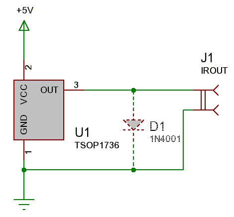
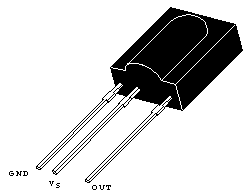

This is perhaps the simplest and cheapest homebrew IR receiver hardware for PC that can be built ever. It uses just one piece: a IR module (any, more details on them can be found on lirc home page) and a (very) optional diode.
The basic idea is that the output of the IR module (somewhere in the range from 0 to ~3-4V) can be limited by using the attenuator built into every audio-card (also known as "mixer sliders"). For purists it could be done by connecting a diode so that it shunts any output voltages above ~0.6V (it is shown hashed on the schematics) but this is not needed at all (I personally am not using the diode).
Here is the circuit:
|  |
And here is the pin-out of the TSOP1736 integrated circuit:
|  |
For other ICs I would recommend taking a look into the respective data-sheet, they usually can be easily found on the net.
Nevertheless to the simplicity of the circuit, it has advantages. One of the advantages is that it eats very little CPU time, because sampling the IR output is done by the sound card in background, and you don't ever need high sampling rates nor sample sizes: 8kHz 8-bit sampling is more than enough for our job.
Another advantage is that often you can avoid any external connectors (like the one in the COM or LPT port) - you can use just one of the lots of internal pin-connectors that every modern motherboard has. So the device can be fully hidden inside the computer case (except the receiver's photodiode, of course).
Of course there are disadvantages too :-). One of the disadvantages is that you need a power source. But usually there are so many power pins on the motherboard that you always can find a spare +5V power source. Consult your motherboard documentation for details.
Another potential disadvantage is that you need a duplex sound card, e.g. one that can play and record at one time. Most modern sound cards are duplex, so most probably you won't have problems with this. Also if you have just one sound card you won't be able to record sound and do infrared control at the same time (if your card has just one ADC).
To use this receiver, you will need to compile lirc with support for the audio-alsa driver. For more information about the driver and its usage you can refer to the LIRC documentation.
Author: Andrew Zabolotny